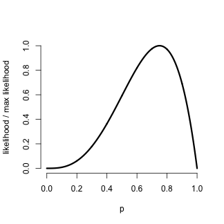

- A common and fruitful approach to statistics is to assume that the data arises from a family of distributions indexed by a parameter that represents a useful summary of the distribution
- The likelihood of a collection of data is the joint density evaluated as a function of the parameters with the data fixed
- Likelihood analysis of data uses the likelihood to perform inference regarding the unknown parameter
Likelihood
Statistical Inference
Brian Caffo, Roger Peng, Jeff Leek
Johns Hopkins Bloomberg School of Public Health
Likelihood
Likelihood
Given a statistical probability mass function or density, say \(f(x, \theta)\), where \(\theta\) is an unknown parameter, the likelihood is \(f\) viewed as a function of \(\theta\) for a fixed, observed value of \(x\).
Interpretations of likelihoods
The likelihood has the following properties:
- Ratios of likelihood values measure the relative evidence of one value of the unknown parameter to another.
- Given a statistical model and observed data, all of the relevant information contained in the data regarding the unknown parameter is contained in the likelihood.
- If \(\{X_i\}\) are independent random variables, then their likelihoods multiply. That is, the likelihood of the parameters given all of the \(X_i\) is simply the product of the individual likelihoods.
Example
- Suppose that we flip a coin with success probability \(\theta\)
- Recall that the mass function for \(x\) \[ f(x,\theta) = \theta^x(1 - \theta)^{1 - x} ~~~\mbox{for}~~~ \theta \in [0,1]. \] where \(x\) is either \(0\) (Tails) or \(1\) (Heads)
- Suppose that the result is a head
- The likelihood is \[ {\cal L}(\theta, 1) = \theta^1 (1 - \theta)^{1 - 1} = \theta ~~~\mbox{for} ~~~ \theta \in [0,1]. \]
- Therefore, \({\cal L}(.5, 1) / {\cal L}(.25, 1) = 2\),
- There is twice as much evidence supporting the hypothesis that \(\theta = .5\) to the hypothesis that \(\theta = .25\)
Example continued
- Suppose now that we flip our coin from the previous example 4 times and get the sequence 1, 0, 1, 1
- The likelihood is: \[ \begin{eqnarray*} {\cal L}(\theta, 1,0,1,1) & = & \theta^1 (1 - \theta)^{1 - 1} \theta^0 (1 - \theta)^{1 - 0} \\ & \times & \theta^1 (1 - \theta)^{1 - 1} \theta^1 (1 - \theta)^{1 - 1}\\ & = & \theta^3(1 - \theta)^1 \end{eqnarray*} \]
- This likelihood only depends on the total number of heads and the total number of tails; we might write \({\cal L}(\theta, 1, 3)\) for shorthand
- Now consider \({\cal L}(.5, 1, 3) / {\cal L}(.25, 1, 3) = 5.33\)
- There is over five times as much evidence supporting the hypothesis that \(\theta = .5\) over that \(\theta = .25\)
Plotting likelihoods
- Generally, we want to consider all the values of \(\theta\) between 0 and 1
- A likelihood plot displays \(\theta\) by \({\cal L}(\theta,x)\)
- Because the likelihood measures relative evidence, dividing the curve by its maximum value (or any other value for that matter) does not change its interpretation
pvals <- seq(0, 1, length = 1000)
plot(pvals, dbinom(3, 4, pvals)/dbinom(3, 4, 3/4), type = "l", frame = FALSE,
lwd = 3, xlab = "p", ylab = "likelihood / max likelihood")

Maximum likelihood
- The value of \(\theta\) where the curve reaches its maximum has a special meaning
- It is the value of \(\theta\) that is most well supported by the data
- This point is called the maximum likelihood estimate (or MLE) of \(\theta\) \[ MLE = \mathrm{argmax}_\theta {\cal L}(\theta, x). \]
- Another interpretation of the MLE is that it is the value of \(\theta\) that would make the data that we observed most probable
Some results
- \(X_1, \ldots, X_n \stackrel{iid}{\sim} N(\mu, \sigma^2)\) the MLE of \(\mu\) is \(\bar X\) and the ML of \(\sigma^2\) is the biased sample variance estimate.
- If \(X_1,\ldots, X_n \stackrel{iid}{\sim} Bernoulli(p)\) then the MLE of \(p\) is \(\bar X\) (the sample proportion of 1s).
- If \(X_i \stackrel{iid}{\sim} Binomial(n_i, p)\) then the MLE of \(p\) is \(\frac{\sum_{i=1}^n X_i}{\sum_{i=1}^n n_i}\) (the sample proportion of 1s).
- If \(X \stackrel{iid}{\sim} Poisson(\lambda t)\) then the MLE of \(\lambda\) is \(X/t\).
- If \(X_i \stackrel{iid}{\sim} Poisson(\lambda t_i)\) then the MLE of \(\lambda\) is \(\frac{\sum_{i=1}^n X_i}{\sum_{i=1}^n t_i}\)
Example
- You saw 5 failure events per 94 days of monitoring a nuclear pump.
- Assuming Poisson, plot the likelihood
lambda <- seq(0, 0.2, length = 1000)
likelihood <- dpois(5, 94 * lambda)/dpois(5, 5)
plot(lambda, likelihood, frame = FALSE, lwd = 3, type = "l", xlab = expression(lambda))
lines(rep(5/94, 2), 0:1, col = "red", lwd = 3)
lines(range(lambda[likelihood > 1/16]), rep(1/16, 2), lwd = 2)
lines(range(lambda[likelihood > 1/8]), rep(1/8, 2), lwd = 2)